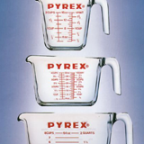
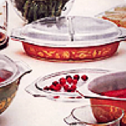
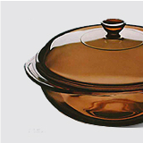
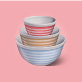
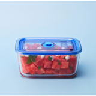

Pyrex Story
100년 전통의 파이렉스 이야기
-
1915
Pyrex 명칭의 탄생.
Corning의 다른 상표에 쓰이던
[PIE]와[X]를 조합해 PYREX이름 탄생 -
1936
Pyrex GLASS.
세계 최대의 단일 망원경인
헤일 망원경의 주경에 사용.
가스렌지에서 사용 가능한
최초의 글라스 웨어로 소개 -

1941
Pyrex의 대표 디자인
계량컵 출시. -

1957
아름다운 패턴의
Pyrex탄생.
-
1962
GEMINI,APOLLO
우주캡슐의 창문으로 제작. -

1977
Clearly Color
진한갈색 투명 유리에 사용. -

1986
트렌디한 Pyrex
무지개빛 그릇 출시. -

2012
Pyrex의 파란뚜껑
밀폐시스템과 통풍 구성을 갖춘
플라스틱 뚜껑으로 전자렌지도
이용 가능한 저장 용기 개발
-
2014
Milestone 기록
400만장 이상의 유리제품 생산
-
1936
Pyrex 100주년